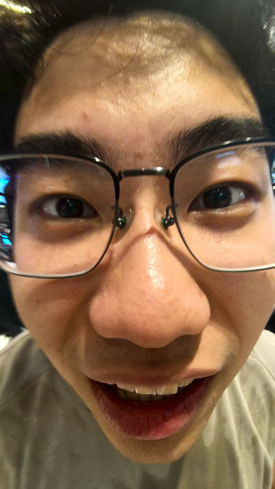

大学不是终点，而是起点。别只盯着分数，多去社团、实习、旅行，真正让你成长的往往是课外那些“没用”的事。毕业后最怀念的，就是和室友熬夜聊天的日子。珍惜当下！

考研/考公/出国/就业，每条路都有苦，但选自己内心真正想走的路就不会后悔。我选择了工作，现在每天都在学新东西，感觉比读研更充实。你们也要勇敢选择哦～
欢迎学长学姐把你的毕业寄语发给我！微信：你的微信号 / 邮箱：你的邮箱@qq.com格式建议：届别 - 姓名（专业） + 留言内容 + 时间